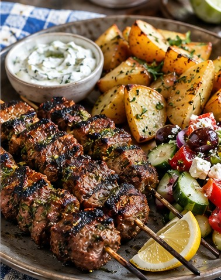

Greek · Dinner · Serves 4 · 55 minutes
Greek Beef Souvlaki with Lemon Potatoes and Village Salad

Ingredient amounts are estimates when scaled. Original recipe and AnyList import remain unchanged.
Ingredients
- 2 lb beef sirloin, cut into 1¼-inch cubes
- 1/4 cup olive oil, for beef
- 2 lemons, juiced, for beef
- 4 garlic cloves, minced
- 2 tsp dried Greek oregano
- 1 tsp kosher salt
- 1/2 tsp black pepper
- 2 lb Yukon Gold potatoes, wedged
- 1/4 cup olive oil, for potatoes
- 1 lemon, juiced, for potatoes
- 3/4 cup chicken broth
- 2 garlic cloves, minced, for potatoes
- 1 tsp Greek oregano, for potatoes
- 3 tomatoes, cut into wedges
- 1 bell pepper, sliced
- 1/2 red onion, sliced
- 4 oz feta cheese
- 2 Tbsp olive oil, for salad
- 1 tsp red wine vinegar
- 1/2 tsp dried oregano, for salad
Instructions
- FRIDAY: Cube beef; refrigerate safely. Mix beef marinade separately. Parboil potato wedges 6–8 minutes, drain, cool promptly and refrigerate. Wash salad vegetables.
- SUNDAY: Marinate beef with olive oil, lemon, garlic and oregano for 30–60 minutes in refrigerator; add salt before cooking. Do not leave in acidic marinade since Friday.
- Heat oven to 450°F. Toss potatoes with olive oil, lemon, broth, garlic and oregano. Roast 20–30 minutes until tender and browned.
- Thread beef on skewers and grill or sear over high heat 6–10 minutes depending on size and desired doneness; rest 5 minutes.
- Combine tomatoes, bell pepper and red onion; top with feta and dress with olive oil, vinegar and oregano just before serving.